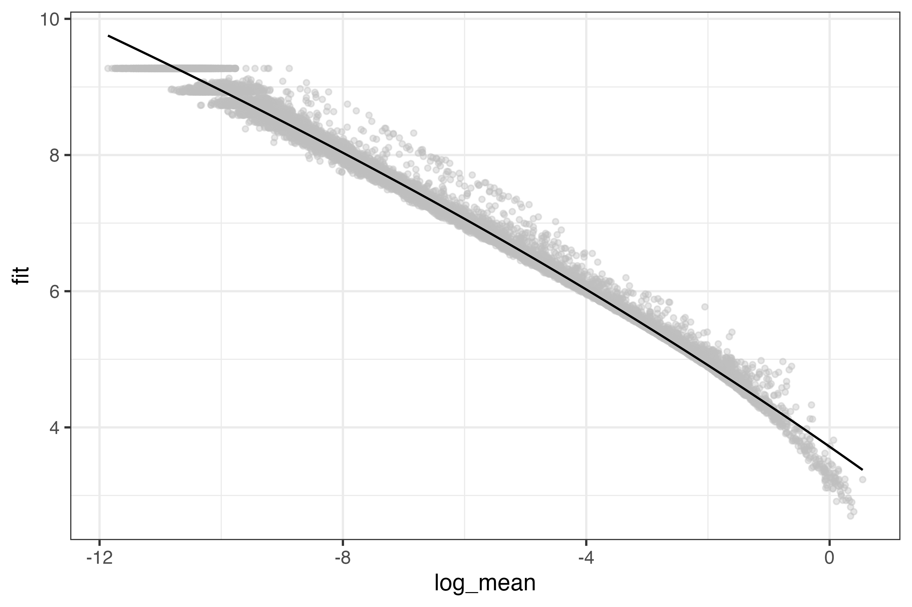
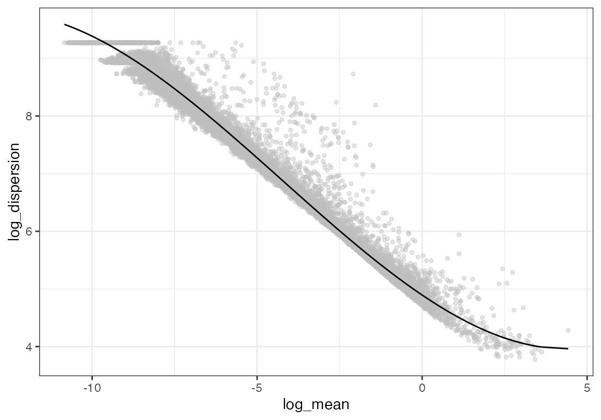
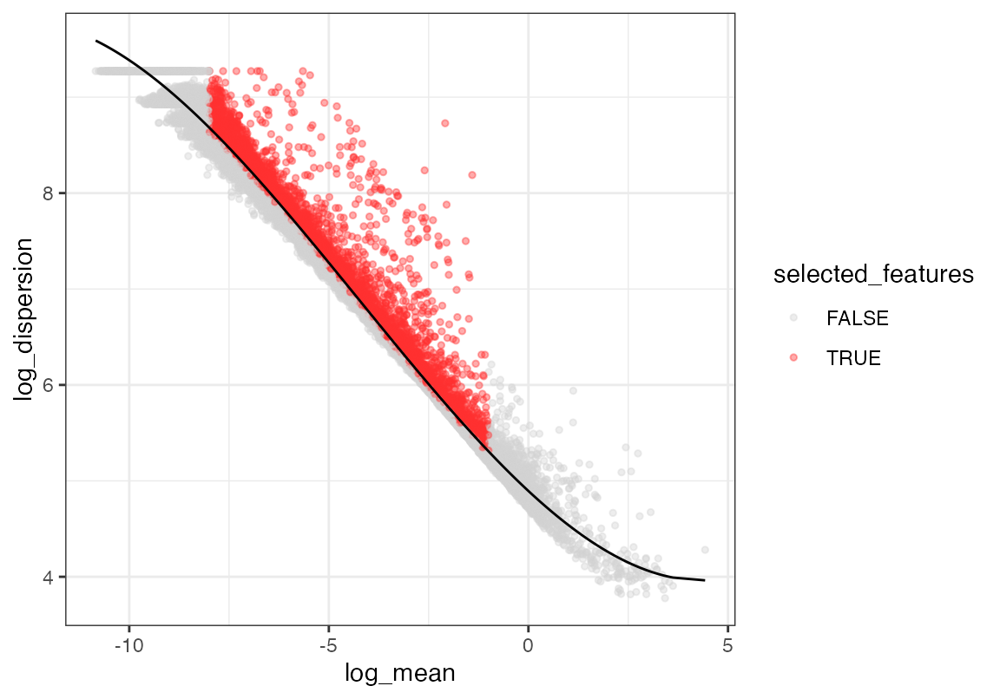
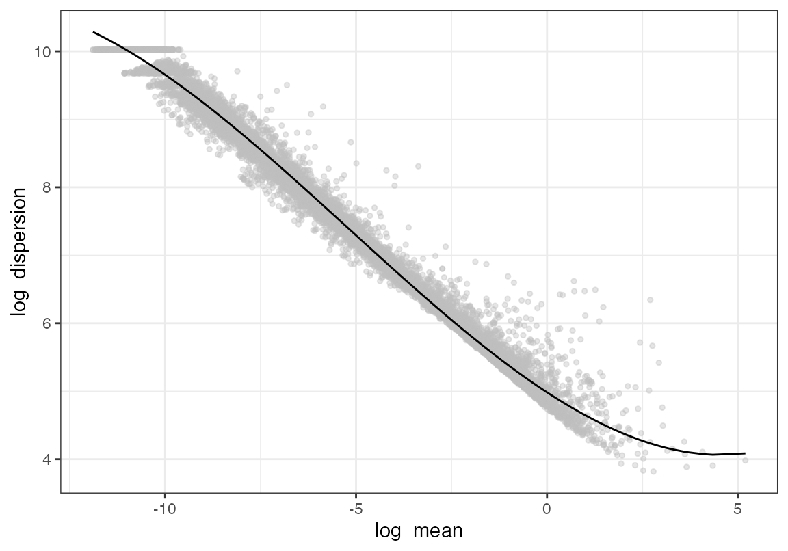
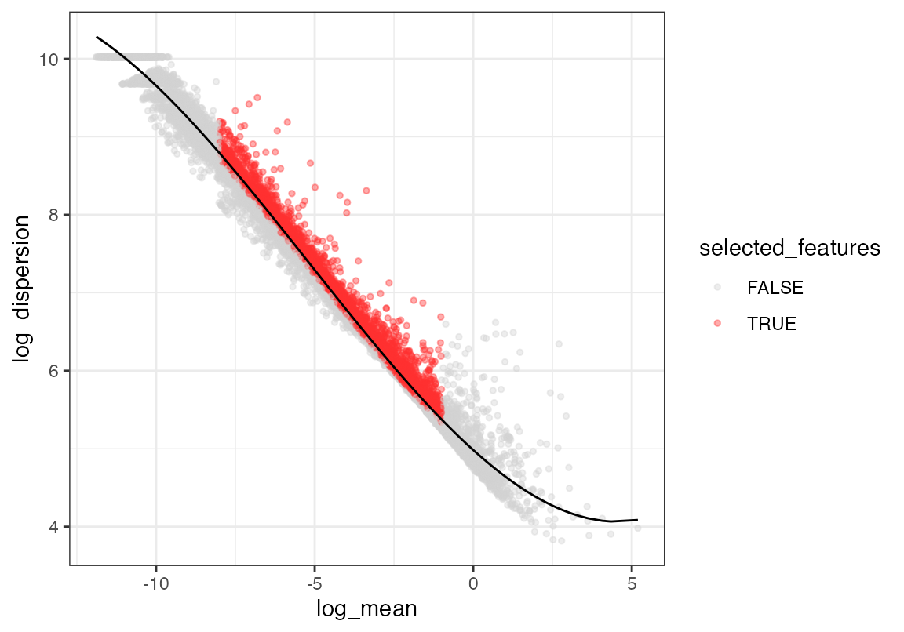
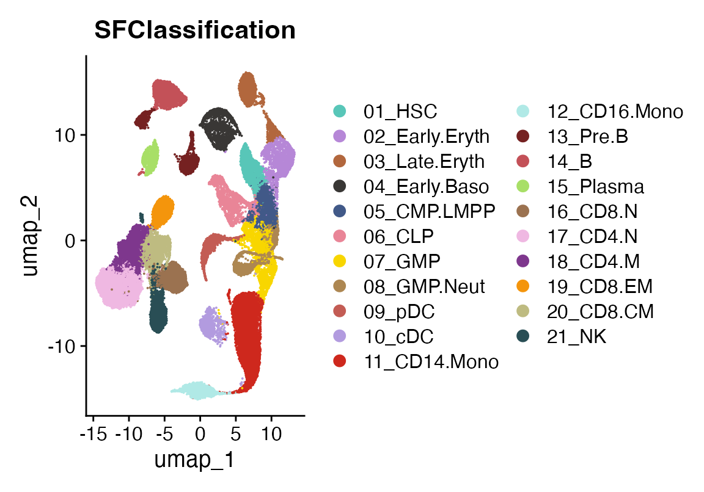
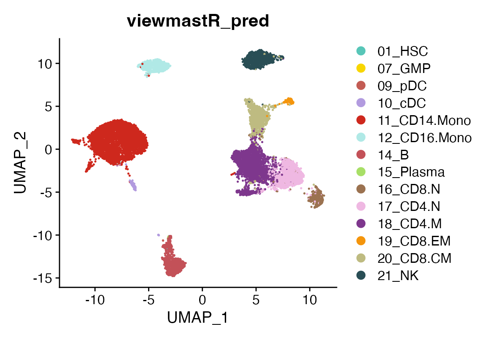
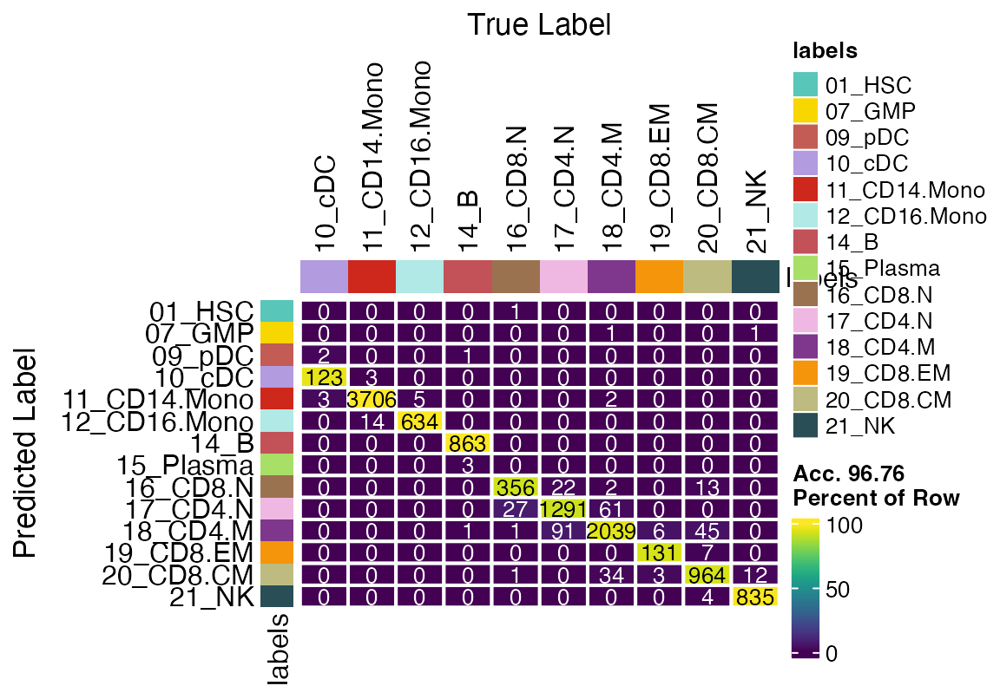
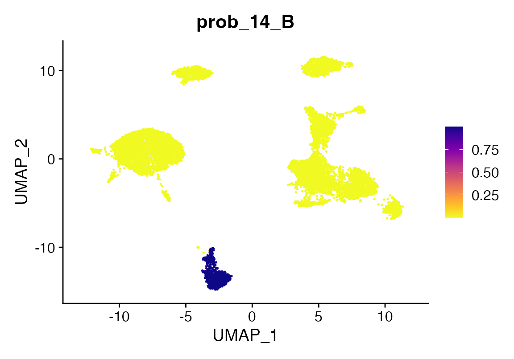
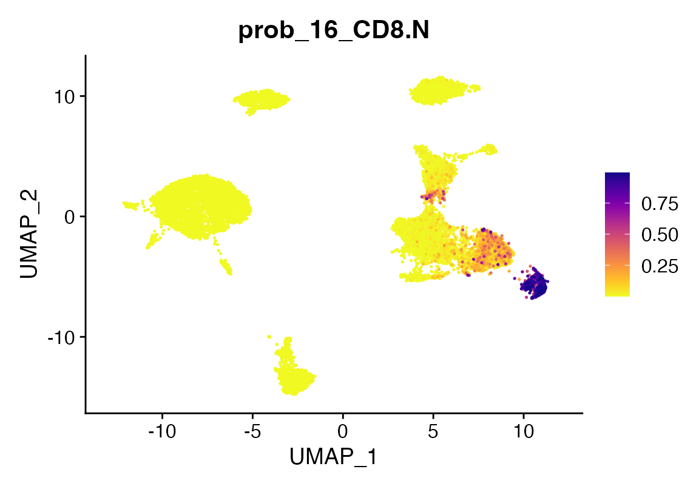

How to use viewmastR
2024-01-23
HowTo.RmdViewmastR is a tool designed to predict cell type assignments in a query dataset based on reference data. In this tutorial, you’ll learn how to install and use viewmastR, load data, and evaluate its predictions.
Prerequisites
Before we begin, ensure you have an updated Rust installation, as it’s a core dependency. You can follow the instructions provided on the official Rust installation page.
Installing viewmastR
First, ensure you have the devtools R package installed,
which allows you to install packages from GitHub. If
devtools is installed, you can easily install viewmastR
using the following command:
devtools::install_github("furlan-lab/viewmastR")This will fetch the latest version of viewmastR from GitHub and install it.
Running viewmastR
In this section, we’ll load two Seurat objects:
- Query dataset (seu): Contains the data
you want to classify.
- Reference dataset (seur): Contains known
cell type labels used to train the model.
ViewmastR predicts the cell types of your query dataset by leveraging the features associated with cell type labels in the reference data.
# Load required packages
suppressPackageStartupMessages({
library(viewmastR)
library(Seurat)
library(ggplot2)
library(scCustomize)
})
# Load query and reference datasets
seu <- readRDS(file.path(ROOT_DIR1, "240813_final_object.RDS"))
seur <- readRDS(file.path(ROOT_DIR2, "230329_rnaAugmented_seurat.RDS"))Defining “Ground Truth” in the Query Dataset
Although we don’t know the cell type labels for the query dataset a priori, we can approximate the ground truth by using cluster-based cell type assignments. This approximation will help us evaluate the accuracy of viewmastR’s predictions. We can visualize the query dataset with its ground truth labels to get an initial idea of the cell types we’re working with.
DimPlot(seu, group.by = "ground_truth", cols = seur@misc$colors)
Finding Common Features
The performance of viewmastR is enhanced when the features (genes) are consistent between the query and reference datasets. We’ll now identify and select highly variable genes in both datasets and find the common genes to use for training the model.
# Calculate and plot gene dispersion in query dataset
seu <- calculate_feature_dispersion(seu)## | | | 0% | |=================================== | 50% | |======================================================================| 100%
seu <- select_features(seu, top_n = 10000, logmean_ul = -1, logmean_ll = -8)
plot_feature_dispersion(seu)
vgq <- get_selected_features(seu)
# Repeat the process for the reference dataset
seur <- calculate_feature_dispersion(seur)## | | | 0% | |============ | 17% | |======================= | 33% | |=================================== | 50% | |=============================================== | 67% | |========================================================== | 83% | |======================================================================| 100%
plot_feature_dispersion(seur)
seur <- select_features(seur, top_n = 10000, logmean_ul = -1, logmean_ll = -8)
plot_feature_dispersion(seur)
vgr <- get_selected_features(seur)
# Find common genes
vg <- intersect(vgq, vgr)Visualizing Reference Cell Types
Next, we visualize the reference dataset to see the known cell type classifications that viewmastR will use to train its model.
DimPlot(seur, group.by = "SFClassification", cols = seur@misc$colors)
Running viewmastR
Now we run viewmastR to predict cell types in the query dataset. This function will learn from the reference dataset’s cell type annotations and apply its knowledge to classify the query cells.
seu <- viewmastR(seu, seur, ref_celldata_col = "SFClassification", selected_features = vg, max_epochs = 4)Visualizing Predictions
After running viewmastR, we can visualize the predicted cell types for the query dataset.
DimPlot(seu, group.by = "viewmastR_pred", cols = seur@misc$colors)
Evaluating Model Accuracy with a Confusion Matrix
We can further evaluate the accuracy of viewmastR’s predictions by comparing them to the ground truth labels (approximated earlier) using a confusion matrix.
confusion_matrix(pred = factor(seu$viewmastR_pred), gt = factor(seu$ground_truth), cols = seur@misc$colors)
Analyzing Training Performance
ViewmastR can also return a detailed training history, including metrics like training loss and validation loss over time. This helps diagnose overfitting or underfitting during model training.
To access these metrics, you need to set the return_type
parameter to "list". Here’s an example of how to retrieve
and plot the training data:
# Run viewmastR with return_type = "list"
output_list <- viewmastR(seu, seur, ref_celldata_col = "SFClassification", selected_features = vg, return_type = "list")
# Plot training data
plot_training_data(output_list)We can now visualize how the training and validation losses change over the epochs. If the training loss keeps decreasing while the validation loss plateaus or increases, it may indicate overfitting.
plt <- plot_training_data(output_list)
pltProbabilities
Finally, we can also look at prediction probabilities using the
return_probs argument. Doing so will add meta-data columns to the object
prefixed with the string “probs_” for each class of prediction. The
values are transformed log-odds from the model prediction transformed
using the plogis function in R.
seu <- viewmastR(seu, seur, ref_celldata_col = "SFClassification", selected_features = vg, max_epochs = 4, return_probs = T)
FeaturePlot_scCustom(seu, features = "prob_14_B")
FeaturePlot_scCustom(seu, features = "prob_16_CD8.N")
Appendix
## R version 4.4.3 (2025-02-28)
## Platform: aarch64-apple-darwin20
## Running under: macOS Sequoia 15.7.3
##
## Matrix products: default
## BLAS: /Library/Frameworks/R.framework/Versions/4.4-arm64/Resources/lib/libRblas.0.dylib
## LAPACK: /Library/Frameworks/R.framework/Versions/4.4-arm64/Resources/lib/libRlapack.dylib; LAPACK version 3.12.0
##
## locale:
## [1] en_US.UTF-8/en_US.UTF-8/en_US.UTF-8/C/en_US.UTF-8/en_US.UTF-8
##
## time zone: America/Los_Angeles
## tzcode source: internal
##
## attached base packages:
## [1] stats graphics grDevices utils datasets methods base
##
## other attached packages:
## [1] scCustomize_3.2.4 ggplot2_4.0.1 Seurat_5.4.0 SeuratObject_5.3.0
## [5] sp_2.2-0 viewmastR_0.5.0
##
## loaded via a namespace (and not attached):
## [1] fs_1.6.6 matrixStats_1.5.0
## [3] spatstat.sparse_3.1-0 RcppMsgPack_0.2.4
## [5] lubridate_1.9.4 httr_1.4.7
## [7] RColorBrewer_1.1-3 doParallel_1.0.17
## [9] tools_4.4.3 sctransform_0.4.3
## [11] backports_1.5.0 R6_2.6.1
## [13] lazyeval_0.2.2 uwot_0.2.4
## [15] GetoptLong_1.0.5 withr_3.0.2
## [17] gridExtra_2.3 progressr_0.18.0
## [19] cli_3.6.5 Biobase_2.66.0
## [21] textshaping_1.0.4 Cairo_1.7-0
## [23] spatstat.explore_3.7-0 fastDummies_1.7.5
## [25] labeling_0.4.3 sass_0.4.10
## [27] S7_0.2.1 spatstat.data_3.1-9
## [29] proxy_0.4-29 ggridges_0.5.7
## [31] pbapply_1.7-4 pkgdown_2.2.0
## [33] systemfonts_1.3.1 foreign_0.8-90
## [35] R.utils_2.13.0 dichromat_2.0-0.1
## [37] parallelly_1.46.1 mcprogress_0.1.1
## [39] rstudioapi_0.18.0 generics_0.1.4
## [41] shape_1.4.6.1 crosstalk_1.2.2
## [43] ica_1.0-3 spatstat.random_3.4-4
## [45] dplyr_1.1.4 Matrix_1.7-3
## [47] ggbeeswarm_0.7.3 S4Vectors_0.44.0
## [49] abind_1.4-8 R.methodsS3_1.8.2
## [51] lifecycle_1.0.5 yaml_2.3.12
## [53] snakecase_0.11.1 SummarizedExperiment_1.36.0
## [55] recipes_1.3.1 SparseArray_1.6.2
## [57] Rtsne_0.17 paletteer_1.7.0
## [59] grid_4.4.3 promises_1.5.0
## [61] crayon_1.5.3 miniUI_0.1.2
## [63] lattice_0.22-7 cowplot_1.2.0
## [65] magick_2.9.0 pillar_1.11.1
## [67] knitr_1.51 ComplexHeatmap_2.22.0
## [69] GenomicRanges_1.58.0 rjson_0.2.23
## [71] boot_1.3-31 future.apply_1.20.1
## [73] codetools_0.2-20 glue_1.8.0
## [75] spatstat.univar_3.1-6 data.table_1.18.0
## [77] vctrs_0.7.1 png_0.1-8
## [79] spam_2.11-3 Rdpack_2.6.4
## [81] gtable_0.3.6 rematch2_2.1.2
## [83] assertthat_0.2.1 cachem_1.1.0
## [85] gower_1.0.2 xfun_0.56
## [87] rbibutils_2.3 S4Arrays_1.6.0
## [89] mime_0.13 prodlim_2025.04.28
## [91] reformulas_0.4.0 survival_3.8-3
## [93] timeDate_4051.111 SingleCellExperiment_1.28.1
## [95] iterators_1.0.14 pbmcapply_1.5.1
## [97] hardhat_1.4.2 lava_1.8.2
## [99] fitdistrplus_1.2-6 ROCR_1.0-12
## [101] ipred_0.9-15 nlme_3.1-168
## [103] RcppAnnoy_0.0.23 GenomeInfoDb_1.42.3
## [105] bslib_0.9.0 irlba_2.3.5.1
## [107] vipor_0.4.7 KernSmooth_2.23-26
## [109] otel_0.2.0 rpart_4.1.24
## [111] colorspace_2.1-2 BiocGenerics_0.52.0
## [113] Hmisc_5.2-5 nnet_7.3-20
## [115] ggrastr_1.0.2 tidyselect_1.2.1
## [117] compiler_4.4.3 htmlTable_2.4.3
## [119] desc_1.4.3 DelayedArray_0.32.0
## [121] plotly_4.12.0 checkmate_2.3.3
## [123] scales_1.4.0 lmtest_0.9-40
## [125] stringr_1.6.0 digest_0.6.39
## [127] goftest_1.2-3 spatstat.utils_3.2-1
## [129] minqa_1.2.8 rmarkdown_2.30
## [131] XVector_0.46.0 htmltools_0.5.9
## [133] pkgconfig_2.0.3 base64enc_0.1-3
## [135] lme4_1.1-37 sparseMatrixStats_1.18.0
## [137] MatrixGenerics_1.18.1 fastmap_1.2.0
## [139] rlang_1.1.7 GlobalOptions_0.1.3
## [141] htmlwidgets_1.6.4 UCSC.utils_1.2.0
## [143] shiny_1.12.1 DelayedMatrixStats_1.28.1
## [145] farver_2.1.2 jquerylib_0.1.4
## [147] zoo_1.8-15 jsonlite_2.0.0
## [149] ModelMetrics_1.2.2.2 R.oo_1.27.0
## [151] magrittr_2.0.4 Formula_1.2-5
## [153] GenomeInfoDbData_1.2.13 dotCall64_1.2
## [155] patchwork_1.3.2 Rcpp_1.1.1
## [157] reticulate_1.44.1 stringi_1.8.7
## [159] pROC_1.19.0.1 zlibbioc_1.52.0
## [161] MASS_7.3-65 plyr_1.8.9
## [163] parallel_4.4.3 listenv_0.10.0
## [165] ggrepel_0.9.6 forcats_1.0.1
## [167] deldir_2.0-4 splines_4.4.3
## [169] tensor_1.5.1 circlize_0.4.17
## [171] igraph_2.2.1 spatstat.geom_3.7-0
## [173] RcppHNSW_0.6.0 reshape2_1.4.5
## [175] stats4_4.4.3 evaluate_1.0.5
## [177] ggprism_1.0.7 nloptr_2.2.1
## [179] foreach_1.5.2 httpuv_1.6.16
## [181] RANN_2.6.2 tidyr_1.3.2
## [183] purrr_1.2.1 polyclip_1.10-7
## [185] future_1.69.0 clue_0.3-66
## [187] scattermore_1.2 janitor_2.2.1
## [189] xtable_1.8-4 monocle3_1.3.7
## [191] e1071_1.7-17 RSpectra_0.16-2
## [193] later_1.4.5 viridisLite_0.4.2
## [195] class_7.3-23 ragg_1.5.0
## [197] tibble_3.3.1 beeswarm_0.4.0
## [199] IRanges_2.40.1 cluster_2.1.8.1
## [201] timechange_0.3.0 globals_0.18.0
## [203] caret_7.0-1
getwd()## [1] "/Users/sfurlan/develop/viewmastR/vignettes"